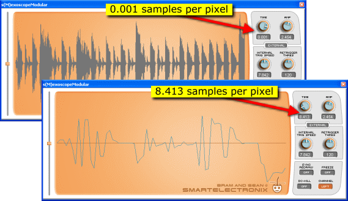

The Controls
Display controls

Time controls the number of pixels per sample. The lower the number, the finer the resolution of the waveform. The lowest value is 31.62 pixels to draw every sample, and the highest setting is 0.001... meaning that every pixel of length represents 1000 samples.
The waveform itself will change colours to indicate if it is above or below 1 sample per pixel. At a Time of 1 or lower, a grey waveform display shows that more than one sample is compressed into each pixel. When Time is set higher than 1, a blue waveform indicates that the resolution uses more pixels to draw each sample. The figure below demonstrates the differences between extreme time settings.
Amp controls the amplitude of the waveform in the display. Simplicity itself: if your waveform is too thin, crank it up! Cut off at the top and bottom of the display window? Turn that amp down.

Retrigger modes

Free mode is the default, and means that the display never erases and immediately starts writing again at the left as soon as the waveform reaches the right side of the display area.
Internal mode retriggers the display at a frequency set by the Internal Trig Speed knob. Values are measured in Hz, and retrigger rates range from as infrequently as 0.441 Hz to as often as 139.4 times a second. This mode is useful if you only want to watch a certain part of a waveform.
Rising This mode retriggers the display every time a waveform peak rises past a certain level.

Drag the level slider (to the left of the display) to set the retrigger level above or below the zero crossing. The retrigger level is indicated by the white line.
Falling Identical to Rising mode, except that the display retriggers only when the waveform falls past the retrigger level.
External mode, and Retrigger threshold
In this mode, the display retriggers whenever a trigger -- that is, a sample value of 1 -- is received by the plugin's trigger input. See below for more details on the modular version.
In all modes, the Retrigger Threshold knob determines how soon the display can be retriggered after the last trigger. This threshold is measured in a number of samples. For example, if the Retrigger Threshold is set to 450, then the display will not retrigger unless at least 450 samples have passed through the display since the last retrigger. Useful if you absolutely need to see a certain number of samples in your waveform before it refreshes. Minimum: 1 sample, maximum: 10000 samples.
s(M)exoscope options

Sync Redraw, when activated, only updates waveform data when the plugin's internal graphic buffer is full (as opposed to in real-time). In other words, turn this on to slow down how often the display refreshes, and adjust the Time knob again to find the right speed.
Freeze -- self-explanatory (but here you go anyways). Click this button to freeze the waveform in the display.
DC-Kill -- click this button to automatically compensate for DC offset, if your waveform is too far off the zero crossing line.
Channel -- click this button to toggle the displayed waveform between the right and left audio channels.